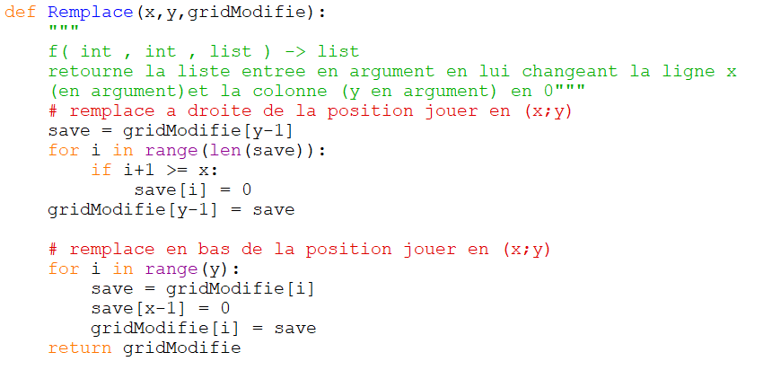
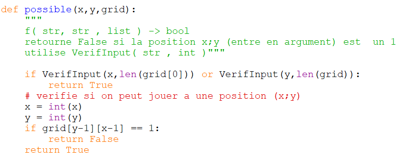
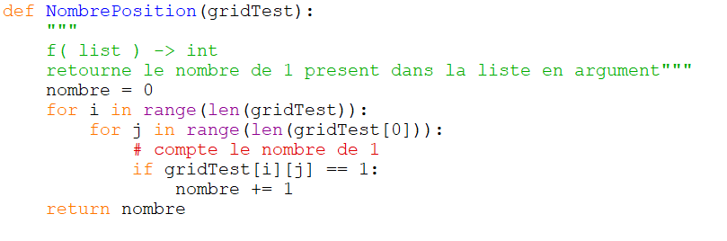
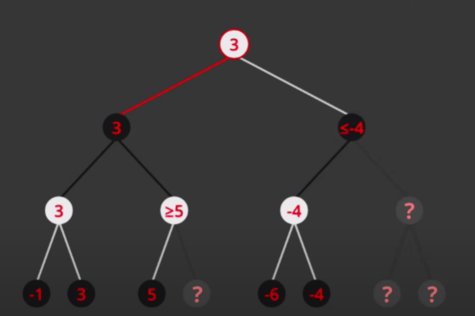

- Ce projet nous a pris toutes les semaines disponibles;
- Qui a fait quoi ?
- l'IA et la base du jeu : Nils
- l'interface et aide au passage en Javascript : Dimitris
- Comment fonctionne le programme ?
- Le programme est separé en plein de petites fonctions avec des buts bien precis
- Les fonctions principales sont la base du jeu et elles sont :



- Ensuite nous avons ajouté une IA
- Il y a deux types d'IA : l'aleatoire et l'intelligente
- L'aleatoire fait dans l'ordre :
- Regarder toutes les possibilités de jouer et les memoriser
- Prendre aleatoirement une position à jouer dans celles memorisees
- L'IA qui réfléchit utilise l'algorithme Mini-Max (ligne 383)
- Le Mini-Max fabrique l'arbre des possibles avec une profondeur de 4 (8 sur Javascript)
sans oublier la fonction en dessous (IA_minimax(grid)) qui fait une profondeur de plus
- nous avons trouvé que le temps de réflexion de l'IA était trop long donc
nous avons implémenté l'élagage Alpha-Beta qui réduit le nombre de calculs
total tout en gardant la meilleure efficacité (le temps de calcul peut etre divisé par 10 ou plus des fois)

Nous avons ensuite choisi de “passer” (mais plutôt entièrement refaire) notre projet avec ces deux
langues (trois si nous prenons en compte le CSS, qui accompagne l’HTML afin de lui donner du “style”,
c’est-à-dire qu’il est utilisé pour “styliser” et mettre en page la page Web, par exemple pour modifier
la police, la couleur, la taille et l'espacement du contenu, le diviser en plusieurs colonnes ou ajouter
des animations et d'autres éléments décoratifs), car il s’agit d’un moyen nécessitant très peu de connaissances
sur ces deux langages (principalement car ils sont très faciles à apprendre).
Par exemple, le language HTML ne s’agit pas d’un langage qui nécessite des compétences sur la maitrise de l’informatique
en profondeur pour une partie majoritaire qui nous permet de représenter l’idée initiale derrière le concept de notre jeu.
De plus, le JavaScript est un langage qui ressemble beaucoup à Python (le langage que nous avons utilise pendant
les cours de NSI et que nous avons utilisé afin de créer le jeu dans un premier temps), ce qui nous a permis
de rapidement s’habituer à l’emploi de ce dernier.
HTML signifie « HyperText Markup Language » qu'on peut traduire par « langage de balises pour l'hypertexte ».
Il est utilisé afin de créer et de représenter le contenu d'une page web et sa structure. D'autres technologies
sont utilisées avec HTML pour décrire la présentation d'une page (CSS) et/ou ses
fonctionnalités interactives (JavaScript).
Le JavaScript (abrégé JS) est un langage de script léger, orienté objet, principalement connu
comme le langage de script des pages web, à objets utilisant le concept de prototype
(c’est-à-dire une forme de programmation orientée objet sans classe, fondée sur la notion de prototype.
Un prototype est un objet à partir duquel on crée de nouveaux objets.), disposant d'un typage faible et
dynamique qui permet de programmer suivant plusieurs paradigmes de programmation : fonctionnelle,
impérative et orientée objet.
 Voir le jeu
Voir le jeu